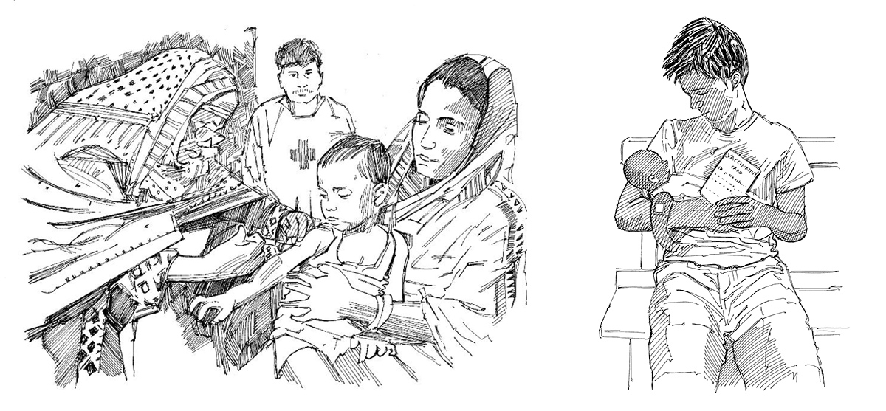

La diphtérie, le tétanos, la coqueluche, la poliomyélite, la rougeole, la rubéole, les oreillons, la varicelle, la méningite, l’hépatite B, la fièvre jaune et la tuberculose sont des maladies communes mais graves; elles peuvent tuer enfants et adultes ou les handicaper à vie.
Les vaccins évitent que les nourrissons, enfants et adultes attrapent et transmettent ces maladies, et les protègent des formes les plus virulentes de ces infections.
Ce que vous devez savoir
Les vaccins contre les maladies énumérées ci-dessus sont administrés aux nourrissons de moins d’un an ; des doses supplémentaires peuvent leur être administrées plus tard, en fonction du programme national de vaccination.
Les vaccins évitent que les nourrissons et les enfants attrapent et transmettent certaines maladies, et les protègent des formes les plus virulentes de ces infections.
Chaque nourrisson doit être vacciné contre ces maladies dans le cadre du plan de vaccination de routine des nourrissons. Parlez avec les autorités sanitaires locales des âges de vaccination et familiarisez-vous avec le programme national de vaccination. Il faudrait véri er le statut de vaccination des enfants plus âgés et, s’ils n’ont pas été vaccinés, envisager de remédier à cela.
Le calendrier des vaccinations de routine peut varier d’un pays à l’autre.
Messages à la population
Un enfant non vacciné a plus de risques de succomber à une maladie ou d’en être gravement atteint.
Les vaccins sont sûrs et ef caces; tous les enfants devraient être vaccinés.
La vaccination doit parfois être retardée pour les personnes modérément ou gravement atteintes d’une maladie, mais les nourrissons, enfants ou adultes devraient être vaccinés dès qu’ils vont mieux.
Les femmes enceintes ont besoin d’au moins deux doses de vaccin contre le tétanos avant l’accouchement.
Ce que vous pouvez faire
Demandez aux autorités sanitaires quel est le programme de vaccination précis pour votre secteur.
Cherchez à savoir quand des vaccinations sont proposées dans votre région (centres de santé et campagnes spéci ques).
Renseignez-vous sur l’endroit où il faut se rendre pour procéder aux vaccinations.
Si les mères n’amènent pas leurs enfants dans les centres de vaccination, cherchez à savoir pourquoi.
Faites connaissance avec toutes les familles ayant des enfants de moins d’un an et rendez-leur visite une fois par mois.
Expliquez aux femmes enceintes qu’elles doivent se soumettre à des contrôles médicaux et devraient se faire administrer deux doses de vaccin contre le tétanos avant d’accoucher.
Si certains membres de la communauté ont peur des vaccins, aidez les travailleurs communautaires à les calmer et apaiser leurs craintes. Corriger les rumeurs et fausses informations au sujet de la vaccination.

Un enfant qui se fait vacciner. Carnet de vaccination.
Messages communautaires
Voir les messages de la communauté suivants pour soutenir vaccinations de routine: